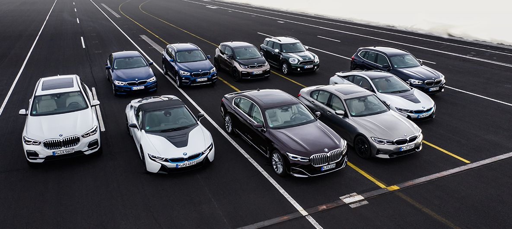
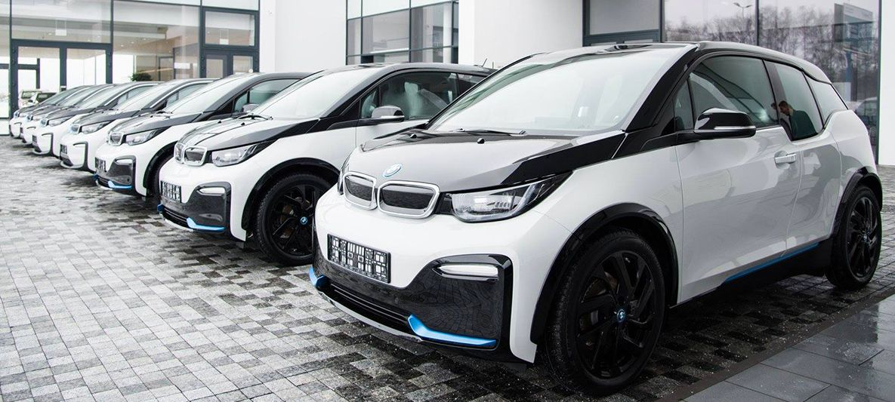
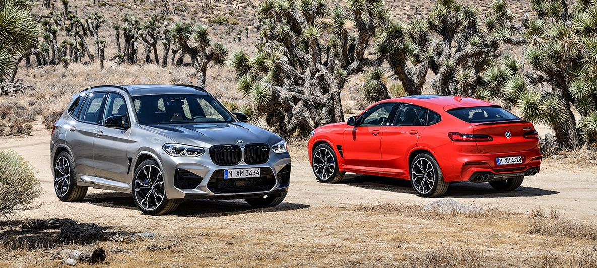
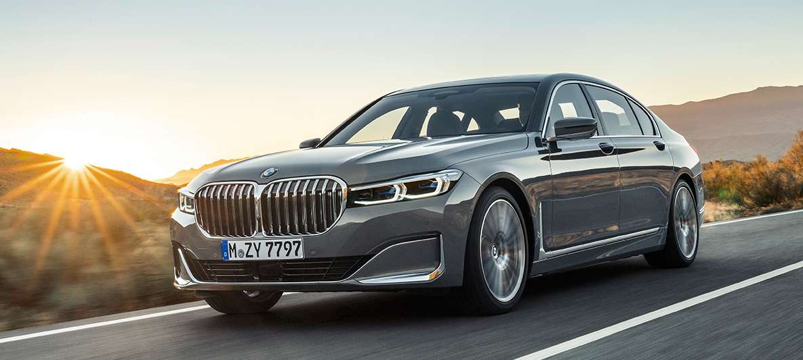

НОВОСТИ И СОБЫТИЯ.
Новости BMW

BMW НА 89-М ЖЕНЕВСКОМ МЕЖДУНАРОДНОМ АВТОСАЛОНЕ 2019.
Стенд BMW на Международном автосалоне 2019 году в Женеве был посвящен продолжению модельного ряда в сегменте роскошных автомобилей и расширению ряда автомобилей с электрическими системами привода. Спустя всего несколько недель после того, как он был торжественно представлен миру, новый роскошный седан BMW 7 серии делает свой дебют в шоу.
ЭНЕРГИЯ НОВЫХ ИДЕЙ. BMW i ОФИЦИАЛЬНЫЙ АВТОМОБИЛЬ ОФИСА ПОСЛA ВОЗОБНОВЛЯЕМОЙ ЭНЕРГИИ.
BMW Украина, первый официальный импортер электромобилей в Украине, гордится тем, что стала частью обеспечения работы Офиса посла Возобновляемой энергии, которым является Руслана Лыжичко, получившая ключи от серии новых электромобилей BMW i3, часть которых представлена в спортивной версии BMW i3s.
НОВЫЕ BMW X3 M И BMW X4 M И ИХ ВЕРСИИ COMPETITION.
BMW X3 M и BMW X4 M задают новые стандарты динамики, маневренности и управляемости в своих классах и на старте продаж сразу будут доступны одновременно в стандартной версии и в версии Competition. Модели Competition отличаются повышенной мощностью и более богатым оснащением.
НОВЫЙ BMW 7 СЕРИИ.
BMW продолжает совершенствовать линейку флагманских моделей класса люкс и представляет новый BMW 7 серии, который сочетает уверенный образ, утонченную элегантность, а также инновационные системы помощи водителю.